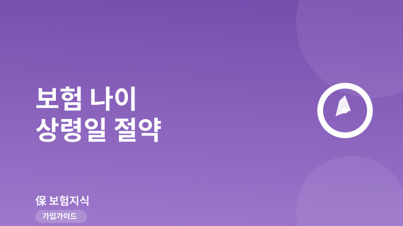
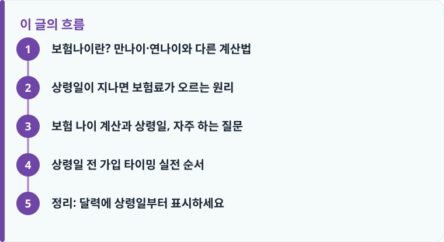

보험나이는 계약일의 만나이를 6개월 기준으로 반올림한 값입니다. 생일 지나 6개월 되는 ‘상령일’ 전에 계약하면 한 살 어린 보험료로 전 기간을 냅니다.
내 상령일 = 생일 + 6개월. 예를 들어 4월 10일생이면 10월 10일이 상령일이고, 그 하루 전인 10월 9일까지가 낮은 보험료 마지노선입니다.
상령일이 지나면 보험나이가 1살 오르고, 30~40대 기준 보험료가 대략 3~5% 오릅니다. 종신·정기보험처럼 만기가 길수록 총액 차이가 커집니다.
보험나이란? 만나이·연나이와 다른 계산법
보험료를 정할 때 쓰는 나이는 주민등록상 만나이도, ‘올해 연도−출생 연도’로 세는 연나이도 아닙니다. 표준약관은 별도의 ‘보험나이’를 씁니다. 계약일 현재의 만나이를 기준으로, 남는 개월 수가 6개월 미만이면 버리고 6개월 이상이면 한 살을 올려 반올림하는 방식입니다. 즉 만 35세 5개월이면 보험나이 35세, 만 35세 7개월이면 보험나이 36세가 됩니다.
그래서 실제 생일이 아직 안 지났는데도 보험나이는 이미 한 살 많을 수 있고, 반대로 생일이 지났어도 6개월이 안 됐으면 보험나이는 그대로입니다. 이 한 살 차이가 평생 내는 보험료의 기준이 되기 때문에, 가입 전에는 만나이가 아니라 보험나이를 먼저 확인해야 합니다. 나이 외에 어떤 요소가 보험료를 움직이는지는 보험료가 달라지는 이유를 정리한 글에서 함께 보면 좋습니다.
상령일이 지나면 보험료가 오르는 원리
‘상령일’은 보험나이가 한 살 올라가는 바로 그 날, 즉 생일로부터 정확히 6개월이 되는 날입니다. 3월 20일생이라면 9월 20일이 상령일입니다. 이날을 기준으로 그 전날까지 계약하면 낮은 보험나이가 적용되고, 상령일 당일부터는 한 살 많은 보험나이로 계산됩니다.
보험료는 나이가 많을수록 사망·질병 위험률이 올라가는 구조라 나이 한 살에 민감합니다. 40대 기준으로 보면 상령일을 넘겨 한 살 오를 때 보장성 보험료가 대략 3~5%, 나이가 많을수록 더 크게 오릅니다. 중요한 건 이 인상이 첫 회만이 아니라는 점입니다. 20년납 종신보험이라면 매달 오른 보험료를 20년 내내 내므로, 상령일 하루 차이가 수십만 원에서 수백만 원의 총액 차이로 이어집니다. 예를 들어 월 보험료가 10만 원인데 상령일을 넘겨 4%가 오르면 매달 4,000원, 20년이면 96만 원을 더 내게 되는 셈입니다. 갱신형이라면 갱신 때마다 계약 당시 정해진 나이 기준선이 따라오므로 초기 나이 설정이 특히 중요합니다. 이 구조가 헷갈린다면 갱신형과 비갱신형의 차이를 먼저 확인하세요.

보험 나이 계산과 상령일, 자주 하는 질문
Q. 내 상령일은 어떻게 계산하나요? 생년월일에 6개월을 더하면 됩니다. 1988년 4월 10일생이라면 10월 10일이 상령일이고, 10월 9일까지 계약하면 낮은 보험나이가 적용됩니다. 하루만 늦어도 보험나이 기준이 바뀌니, 청약서 서명일이 아니라 실제 ‘계약일(청약일)’ 기준이라는 점을 기억하세요.
Q. 상령일 전에 상담만 받고 청약은 나중에 하면 되나요? 안 됩니다. 기준은 상담일이 아니라 청약·계약이 성립한 날짜입니다. 상령일이 임박했다면 건강고지와 청약까지 그날 안에 마쳐야 합니다. 심사에서 며칠 걸릴 수 있으니 최소 3~4일 여유를 두고 진행하는 것이 안전합니다.
Q. 이미 상령일이 지났으면 손해인가요? 이미 오른 나이는 되돌릴 수 없지만, 다음 상령일까지는 그 나이가 유지됩니다. 급하지 않다면 무리하게 가입하기보다 가입 전 체크리스트로 보장 설계를 먼저 점검하는 편이 낫습니다. 사회초년생이라면 우선순위 정리는 사회초년생 보험 우선순위 글이 참고가 됩니다.
작성·검수 기준
이 글은 특정 상품 가입을 권유하기 위한 것이 아니라, 보험료 산정의 기준이 되는 보험나이와 상령일 개념을 설명하기 위해 작성했습니다. 6개월 반올림 규칙은 생명·손해보험 표준약관의 일반 기준이며, 실제 인상률과 적용 방식은 상품·보험사·담보에 따라 달라질 수 있습니다.
정확한 보험나이와 상령일은 청약 전 설계사나 보험사 콜센터에 본인 생년월일로 확인하고, 갱신 조건은 처음 보험 가입 가이드와 함께 점검하는 것이 가장 정확합니다.
상령일 전 가입 타이밍 실전 순서
보험나이 한 살을 아끼려면 아래 순서대로 움직이면 실수를 줄일 수 있습니다.
- 내 생년월일에 6개월을 더해 상령일을 계산합니다(예: 4월 10일생 → 10월 10일).
- 상령일까지 남은 기간을 확인합니다. 한두 달 남았다면 서두를 이유가 있습니다.
- 보장 설계와 담보 금액을 먼저 확정합니다. 나이만 아끼려다 필요 보장을 빠뜨리면 손해입니다.
- 건강고지·심사에 걸리는 시간을 고려해 상령일 최소 3~4일 전에 청약을 넣습니다.
- 청약서의 계약일이 상령일 전날 이내인지, 적용된 보험나이가 맞는지 증권에서 확인합니다.
정리: 달력에 상령일부터 표시하세요
보험료를 좌우하는 건 생일이 아니라 생일 6개월 뒤의 상령일입니다. 가입이나 리모델링을 앞두고 있다면 먼저 생년월일에 6개월을 더해 상령일을 계산하고, 그 전날까지 청약을 마치는 것만으로 한 살 낮은 보험료를 평생 유지할 수 있습니다. 반대로 상령일을 모른 채 며칠 늦추면 하루 차이로 총액이 벌어집니다. 갱신 부담까지 함께 보려면 갱신 보험료가 급등하는 원리도 확인해 두세요.
다른 보험 정보 글이 궁금하다면 보험지식 블로그에서 이어 읽어 보세요. 가입 전에는 반드시 약관과 상품설명서를 확인하는 것이 가장 안전한 방법입니다.